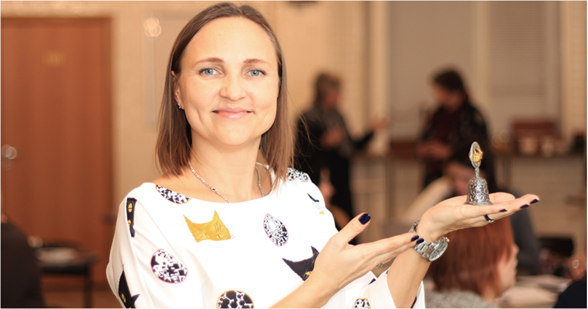

Хутор «Долина Мудрости»: адаптивная среда будущего
Калина Яркина работала диктором на телевидении и автором нескольких теле - и радиопроектов, добилась успеха в корпоративной среде и бизнесе. Однако, чем бы она ни занималась, для нее всегда было важно приносить людям пользу. Одним из главных проектов Калины Яркиной является создание первого в России адаптивного поселка пансионатного типа для людей пожилого возраста.
Калина Яркина всегда мечтала быть врачом. Первое образование она получила в области медицины и на протяжении пяти лет проработала в этой сфере. В том числе, она ухаживала за пожилыми людьми в государственном доме престарелых. Тогда Калина впервые задумалась о том, что с возрастом человек нуждается в особой заботе и поддержке.
Позже, реализуя себя в разных сферах деятельности, Калина много думала об этом. Она понимала, что в современном мире активно развиваются программы надомного ухода за пожилыми людьми, но ей хотелось создать нечто более масштабное. На ее взгляд, обществу необходим новый тип адаптивного пространства, где люди после 55 лет ощущали бы заботу о себе, имели возможности для реализации своего потенциала.
Когда человек ведет активную и интересную жизнь, это позитивно сказывается и на его мыслительных способностях, поддержании тонуса мозга.
Так зародилась идея создать специальный пансионат для пожилых людей в Воронеже, которая со временем трансформировалась в инициативу построить целое инновационное поселение.
Хутор «Долина Мудрости» – проект для людей, обладающих жизненным опытом и желанием продолжать развиваться, реализовывая свой потенциал независимо от того, сколько им лет. Калина Яркина объяснила, что в поселок планируется включить несколько разноформатных пансионатов для пожилых, развитую инфраструктуру: доступные рабочие места, площадки для обучения по разным направлениям и для отдыха. В России аналогов такого проекта еще нет.
«Для меня важно создать такое место, где пожилые люди будут счастливы, смогут полноценно жить в комфортных и достойных условиях, без эйджизма, а их дети и внуки будут спокойны за благополучие своих близких», – рассказывает основатель проекта.
Несмотря на то что строительство поселка займет достаточно много времени, Калина Яркина и ее единомышленники уже начали частичную реализацию проекта через дополнительные кластеры. Они уже активно сотрудничают с государственными пансионатами и геронтологическими центрами, планируют принять участие в создании «детских садов» для пожилых людей и взаимодействуют с коллегами из региональных органов социальной защиты в рамках национальной программы по улучшению демографической ситуации.